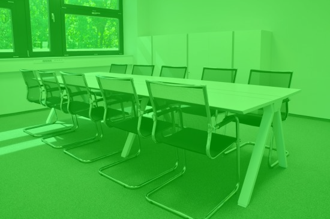

Vítej na neoficiálních stránkách Suchdolského skautingu
V Suchdolském skautingu jsou kluci a holky od 7 let,
kteří rádi chodí společně na výpravy, tábory, schůzky a mnohem další.
V oddíle se dělíme na 3 skupiny:
Kluci do 12 let - Vlčata
Holky do 12 let - Světlušky
Kluci a Holky od 12 let - Skauti/Skautky
Přidejte se k námPodpořte nás!
Suchdolský Skauting roste a tím se zmenšuje kapacita oddílu z důvodů nedostatek vedoucích a dospělých pomocníků a klubovna už nám taky nedostačuje.
Všechny možnosti podpory

Současná klubovna nám přestává stačit
Chci podpořit novou klubovnu
Naše budoucí klubovna
Současná klubovna nám přestává stačit
Rádí bychom se rozšířili dál.
Projekt budeme různými způsoboy,
budeme rádi jestli náš podpoříte!
Chci podpořit novou klubovnu